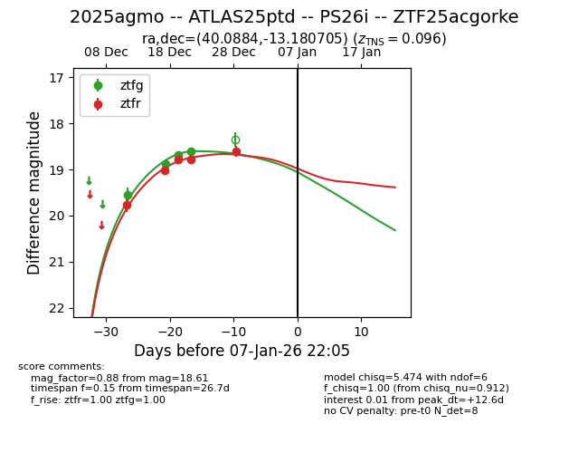
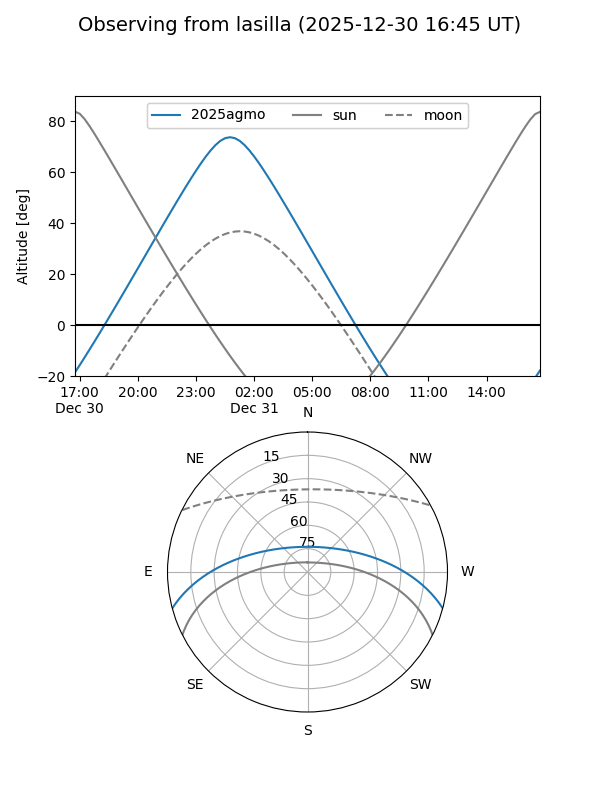
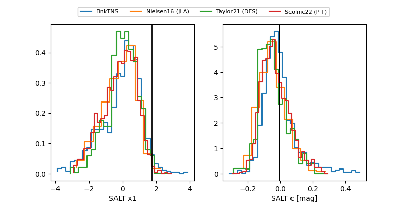

2025agmo
Target 2025agmo at 2025-12-30 16:29
Aliases and brokers:
FINK: fink-portal.org/ZTF25acgorke
Lasair: lasair-ztf.lsst.ac.uk/objects/ZTF25acgorke
ALeRCE: alerce.online/object/ZTF25acgorke
TNS: wis-tns.org/object/2025agmo
YSE: ziggy.ucolick.org/yse/transient_detail/2025agmo
alt names
ZTF25acgorke (ztf,fink_ztf)
2025agmo (tns,yse)
ATLAS25ptd (atlas)
Coordinates:
equatorial (ra, dec) = 40.0884,-13.18071
equatorial (HMS+DMS) = 02:40:21.22,-13:10:50.54
galactic (l, b) = (189.6346,-60.98482)
Flags:
Photometry:
last atlasc=18.51, atlaso=18.51, ztfg=18.60, ztfr=18.61
6 atlasc, 4 atlaso, 4 ztfg, 5 ztfr detections
Lightcurve

Visibility


Additional plots
